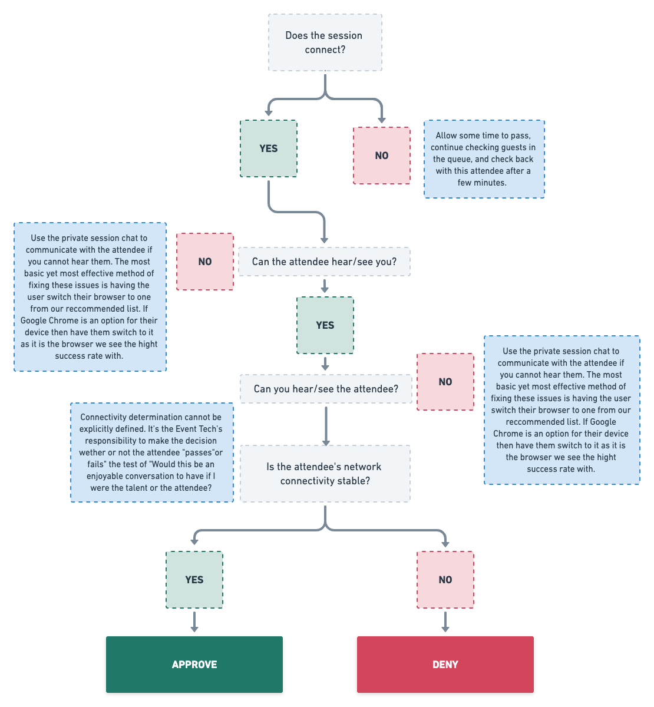

Tech ChecksLast updated: September 15th, 2020
Tech Checks are the process in which an Event Tech determines if an attendee has their microphone, camera, and network connection configured properly prior to them joining their session with the talent.
Note
While there is a set of criteria that needs to be met prior to an approval, ultimately the question that needs to be answered as a 'yes' in order to pass is "Can this attendee have a one-to-two minute uninterrupted conversation with the talent without dealing with consistent or frequent audio/video complications?"
Prerequisites
-
Completed Getting Started
- Shadowed an Event Operations Manager
-
Watched all instructional videos
-
Completed first proficiency test
Overview
Shown below is an illustration that walks you through the decision making process on how you can determine if an attendee passes or fails our Tech Check. Aside from this illustration that highlights some of the issues we run into, the rest of this walkthrough will demonstrate what the workflow is for an ideal Tech Check with an attendee.
